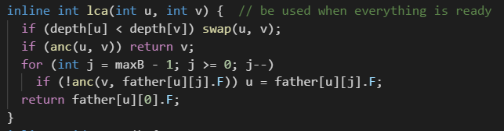

為了寫TIOJ1163學了一下倍增法LCA，蠻輕巧的，沒有原本想像得複雜
外部連結
基本上就三個函式:
->dfs儲存每個點的深度+儲存上一個點(father[][0]))
->loop儲存每個點所有存在的2的冪次的祖先節點
->assume depth(u)>depth(v)，先將u移到v的深度(這裡的depth並沒有考慮權重，不會發生沒有深度相同的點的問題)，
接著再用相似的方法把已經同處同樣深度的u,v慢慢上移，即可找到LCA。
備註:網站裡的程式碼並非完全正確，有些地方仍需加上father不為-1的判斷。
圖像化直覺link:
外部連結
和上一篇一樣，我還是在想TIOJ1163，我看過解答，我始終想不透為何麼LCA可以快速解這問題，
結果只是我想多了，其實想法異常粗暴。(EDIT:其實也要用倍增法，詳見下篇文章)
這題目大部分會被寫在求次小生成樹的解法上，因為次小生成樹的解法是:
先求MST(kruskal算法)，並一一嘗試每一個剩下沒連接到的邊(u,v,w(weight))，
必定形成環，檢查(u,v)間另外一條路徑上的最大權重，刪掉這edge，
接上我們正在嘗試的edge(u,v,w)，會得到新的樹權重和，最後輸出權重最小的結果就好。
回到正題，這個問題的解法是:
->let LCA=lca(u,v)
->define walk(u,v):
->->assume depth(u)>depth(v) and v is an ancestor of u
->->因為在MST,(u,v)間只有一條路徑，所以我們可以一步一步往u上面的祖先走，並記錄最長的邊(可以用倍增法
，詳見下篇文章)
->->得到(u,v)間的最大權重
->end walk
->(因為walk傳入的(u,v)必須是祖先-子孫關係，所以我們必須先求LCA)
->現在我們就可以得到答案是max(walk(u,LCA),walk(v,LCA))
->end
備註:我在寫這題時全部測資都SegFault，目前還沒找到原因...(EDIT:解決，詳見下篇文章)
放一些文章:
TIOJ1163解答
外部連結
上面那個文章裡面的連結，關於walk的詳細說明(其實沒有說明，在code裡)
外部連結
另一種用到LCA的解法，只是我不知道怎麼生成那棵樹
外部連結
另一種解法，好像是從生成MST時動手，沒看太懂
外部連結
次小生成樹
外部連結
我終於AC了，雖然排名不是頂端，但我認為可能已經不那麼重要了，畢竟我完全照著網路解答(tototo大佬的那個解答)
的思路寫，僅僅有一個if條件(lca函式那，不知道為何不用交換u,v如果v比u深)我實在不知道做了什麼神奇的動作可以
省去和我多紀錄了每個點的depth(深度)來進行一些判斷，
基本上沒什麼區別，在最後還是差了40ms左右，我就把這個當做是解題系統的誤差吧(。而至於為什麼之前一直SegFault，
居然是因為我的dfs函式不小心回傳型別寫成int，而我最後並沒有回傳東西，g++ -Wall -Wextra居然什麼都沒有講，
我花了將近一天半重複debug，最後開Ubuntu虛擬機裝clang編譯，才終於告訴我我忘記回傳了，沒回傳不知道為什麼
在這情況會產生UB(Undefined Behavior) :(
回到正題，現在來說一些從tototo大佬解答整理出來的特殊的優化方法。
1.dfs時紀錄每個點的進入/離開時間，撰寫函式anc(ancestor)用以判斷(u,v)兩點的祖先-子孫關係，在最後求lca時
可以從兩個迴圈變成一個迴圈，大概長這樣:

2.可以省去所有判斷father是否為-1的father初始化方法:不要有"到不了"狀態，也就是不要有-1。
具體方法為在初始化時對每一個點的所有祖先都設為自己，如此一來最後原本會是"到不了"的狀態(-1))，會變成端點的號碼。
這樣敘述"非常"不清楚，可以自己想像一下。
3.倍增法walk優化:這個優化並沒有非常特殊，一般來說都已經倍增法求LCA了，自然會想到用倍增法優化walk函式。
具體作法是把father[i][j]的型別從int改成pair
，第一個欄位是原本的值，第二個欄位就是從i點到i的2^j
祖先點路徑上權重最大值，參考一下答案應該不難實作。
一些連結:
高仿oToToT大佬的解答
外部連結
無優化解答(然而和優化後解答只差30ms)
外部連結
暫時不作詳細說明，因為僅僅是拿到AC，但複雜度太高
原始碼:
外部連結